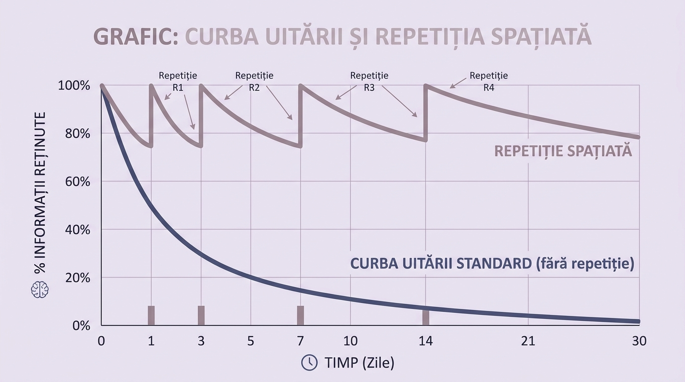
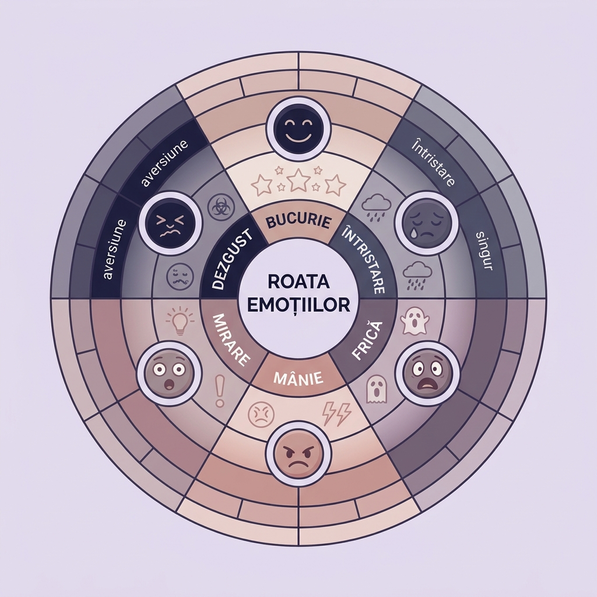

Percepție, memorie, emoții, somn: ce spune cercetarea și cum o poți verifica singur.
1. Percepția și atenția
Percepția nu este o fotografie a lumii: creierul
construiește
imaginea, completând parțile
din experiența trecută. De aceea doi oameni pot privi același eveniment și pot povesti
două scene diferite
. Atenția decide ce intră în scenă: funcționează reflex,
dar poate fi antrenată.

Fig. 1 -- Curba uitării (Ebbinghaus): pe ecrane mici se încarcă varianta compactă prin
<picture>
și
<source>
.
În fișa de laborator, cifrele studiului se scriu astfel:
M = 75, σ = 12
,
unde
σ
notează abaterea standard. Când studiezi, apasă
Ctrl
+
S
pentru a salva și, mai important,
reia materialul mâine
: repetiția spațiată este
linia violeta din graficul de mai sus. Un
plan spațiat
dublează retenția față de o singură lectură.
2. Memoria și uitarea
Memoria are trei etape:
codarea
,
stocarea
și
reactualizarea
. Uitarea nu este un defect,
ci un filtru: creierul păstrează ce e folosit. Formula din introducere,
R(t) = e
-t/s
,
devine practică dacă lucrezi
cu repetiție
: citire, pauză, invocare.
Tabel 1 -- Cantitatea reținută după n zile, fără repetiție (model Ebbinghaus).
Măsurătoarea
Rezultat
Ce poți face
Reactualizare la 1 zi
~33%
Repetă mâine, apoi peste o săptămână și peste o lună:
difuzarea repetițiilor menține curba sus, ca linia violetă.
Reactualizare la 7 zile
~21%
Reactualizare la 31 zile
~21%
Folosirea curentă a informației îngheață uzura naturală.
Surse: curbele grafice sunt modelate pe datele clasice ale lui Ebbinghaus (1885).
3. Emoțiile
O emoție este
un răspuns scurt, intens, cu declanșator clar
; dispoziția e mai lungă, dar mai slabă,
iar temperamentul este
stabil
de la naștere. Cercetarea vorbește despre
emoții de bază
:
bucurie, întristare, frică, mânie, mirare, dezgust.

Fig. 2 -- Roata emoțiilor de bază: denumește trăirea ca să o stăpânești.
Exercițiul de respirație ajută la calmarea fricii; găsești videoclipul pe
pagina multimedia
, iar sunetul de relaxare la secțiunea audio.
Un cuvânt-cheie pentru emoții:
denumește
a da unui sentiment un nume îi reduce intensitatea.
4. Somnul
Fig. 3 -- Hipnogramă: coborârea în somnul adânc și urcările în REM.
Adulții au nevoie de 7-9 ore. N
1
și N
2
sunt fazele de tranziție; N
3
este somnul profund;
REM (
REM
-
Rapid Eye Movement
) este etapa viselor și
cea în care se
consolidează
învățarea emoțională. Dacă te trezești noaptea,
nu te grăbi
: somnul revine în cicli. Un cuvânt-cheie:
ritmul
-
aceeași oră de culcare, incluzând weekendul.
Exercițiu de atenție, în trei pași
Apasă
Space
și numără în liniște respirațiile până la zece; dacă te rătăcești, reia de la unu.
Pentru ritm, poți folosi metronomul din playerul de mai jos; o bătaie, o respirație.
5. Dezvoltarea creierului
La naștere, copilul are mai
puține
legături între neuroni decât la 3 ani;
în adolescență are loc
prunarea sinaptică
: legăturile neutilizate se sting, iar cele folosite
se întăresc. Vezi diagrama de mai jos.
Fig. 4 -- Prunarea sinaptică: mai puține, dar mai puternice legături la adult.